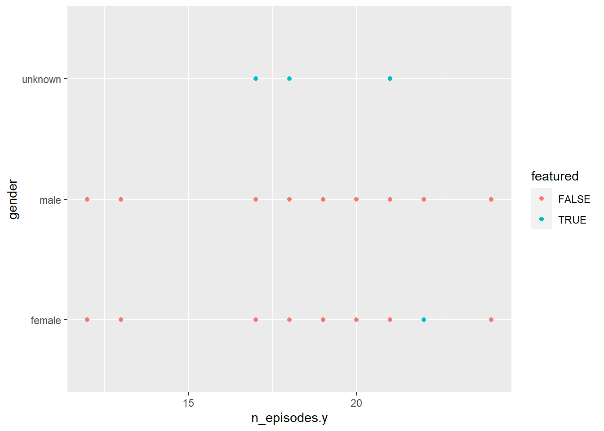

library(tidyverse)
library(ggplot2)
library(summarytools)
library(readxl)
library(lubridate)
knitr::opts_chunk$set(echo = TRUE, warning=FALSE, message=FALSE)Challenge 8
challenge_8
railroads
snl
faostat
debt
Joining Data
Challenge Overview
Today’s challenge is to:
- read in multiple data sets, and describe the data set using both words and any supporting information (e.g., tables, etc)
- tidy data (as needed, including sanity checks)
- mutate variables as needed (including sanity checks)
- join two or more data sets and analyze some aspect of the joined data
(be sure to only include the category tags for the data you use!)
Read in data
Read in one (or more) of the following datasets, using the correct R package and command.
- military marriages ⭐⭐
- faostat ⭐⭐
- railroads ⭐⭐⭐
- fed_rate ⭐⭐⭐
- debt ⭐⭐⭐
- us_hh ⭐⭐⭐⭐
- snl ⭐⭐⭐⭐⭐
# read in snl actors dataset
Actors <- read_csv("_data/snl_actors.csv")
# read in snl casts dataset
Cast <- read_csv("_data/snl_casts.csv")
# read in snl seasons dataset
Season <- read_csv("_data/snl_seasons.csv")
# view datasets
Actors# A tibble: 2,306 × 4
aid url type gender
<chr> <chr> <chr> <chr>
1 Kate McKinnon /Cast/?KaMc cast female
2 Alex Moffat /Cast/?AlMo cast male
3 Ego Nwodim /Cast/?EgNw cast unknown
4 Chris Redd /Cast/?ChRe cast male
5 Kenan Thompson /Cast/?KeTh cast male
6 Carey Mulligan /Guests/?3677 guest andy
7 Marcus Mumford /Guests/?3679 guest male
8 Aidy Bryant /Cast/?AiBr cast female
9 Steve Higgins /Crew/?StHi crew male
10 Mikey Day /Cast/?MiDa cast male
# ℹ 2,296 more rows# view summaries of datasets
dfSummary(Actors)Data Frame Summary
Actors
Dimensions: 2306 x 4
Duplicates: 0
------------------------------------------------------------------------------------------------------------
No Variable Stats / Values Freqs (% of Valid) Graph Valid Missing
---- ------------- ------------------------- -------------------- --------------------- ---------- ---------
1 aid 1. 'N Sync 1 ( 0.0%) 2306 0
[character] 2. 070 Shake 1 ( 0.0%) (100.0%) (0.0%)
3. 10,000 Maniacs 1 ( 0.0%)
4. 14 Karat Soul 1 ( 0.0%)
5. 2 Chainz 1 ( 0.0%)
6. 3-D 1 ( 0.0%)
7. 3RDEYEGIRL 1 ( 0.0%)
8. 50 Cent 1 ( 0.0%)
9. A Tribe Called Quest 1 ( 0.0%)
10. A$AP Rocky 1 ( 0.0%)
[ 2296 others ] 2296 (99.6%) IIIIIIIIIIIIIIIIIII
2 url 1. /Cast/?AbEl 1 ( 0.0%) 2249 57
[character] 2. /Cast/?AdSa 1 ( 0.0%) (97.5%) (2.5%)
3. /Cast/?AiBr 1 ( 0.0%)
4. /Cast/?AlFr 1 ( 0.0%)
5. /Cast/?AlMo 1 ( 0.0%)
6. /Cast/?AlZw 1 ( 0.0%)
7. /Cast/?AmPo 1 ( 0.0%)
8. /Cast/?AnDi 1 ( 0.0%)
9. /Cast/?AnGa 1 ( 0.0%)
10. /Cast/?AnMH 1 ( 0.0%)
[ 2239 others ] 2239 (99.6%) IIIIIIIIIIIIIIIIIII
3 type 1. cast 154 ( 6.7%) I 2306 0
[character] 2. crew 170 ( 7.4%) I (100.0%) (0.0%)
3. guest 1926 (83.5%) IIIIIIIIIIIIIIII
4. unknown 56 ( 2.4%)
4 gender 1. andy 21 ( 0.9%) 2306 0
[character] 2. female 671 (29.1%) IIIII (100.0%) (0.0%)
3. male 1226 (53.2%) IIIIIIIIII
4. unknown 388 (16.8%) III
------------------------------------------------------------------------------------------------------------dfSummary(Cast)Data Frame Summary
Cast
Dimensions: 614 x 8
Duplicates: 0
------------------------------------------------------------------------------------------------------------------------
No Variable Stats / Values Freqs (% of Valid) Graph Valid Missing
---- ----------------- --------------------------------- -------------------- --------------------- ---------- ---------
1 aid 1. Kenan Thompson 18 ( 2.9%) 614 0
[character] 2. Darrell Hammond 14 ( 2.3%) (100.0%) (0.0%)
3. Seth Meyers 13 ( 2.1%)
4. Al Franken 11 ( 1.8%)
5. Fred Armisen 11 ( 1.8%)
6. Kate McKinnon 10 ( 1.6%)
7. Tim Meadows 10 ( 1.6%)
8. Aidy Bryant 9 ( 1.5%)
9. Bobby Moynihan 9 ( 1.5%)
10. Cecily Strong 9 ( 1.5%)
[ 146 others ] 500 (81.4%) IIIIIIIIIIIIIIII
2 sid Mean (sd) : 25.5 (13.1) 46 distinct values . : 614 0
[numeric] min < med < max: : : : . : (100.0%) (0.0%)
1 < 26 < 46 : : . : : : : : : :
IQR (CV) : 22 (0.5) : : : : : : : : : :
: : : : : : : : : :
3 featured 1. FALSE 451 (73.5%) IIIIIIIIIIIIII 614 0
[logical] 2. TRUE 163 (26.5%) IIIII (100.0%) (0.0%)
4 first_epid Mean (sd) : 19909635 (111264.8) 35 distinct values : 50 564
[numeric] min < med < max: : : (8.1%) (91.9%)
19770115 < 19901110 < 20141025 : :
IQR (CV) : 156624.2 (0) : : . : : : .
: : : : : . : :
5 last_epid Mean (sd) : 19944038 (126122.2) 17 distinct values : 17 597
[numeric] min < med < max: : : (2.8%) (97.2%)
19751011 < 19950225 < 20140201 : . : . . .
IQR (CV) : 190005 (0) : : : : : :
: : : : : : : :
6 update_anchor 1. FALSE 541 (88.1%) IIIIIIIIIIIIIIIII 614 0
[logical] 2. TRUE 73 (11.9%) II (100.0%) (0.0%)
7 n_episodes Mean (sd) : 18.7 (4) 22 distinct values : 614 0
[numeric] min < med < max: : (100.0%) (0.0%)
1 < 20 < 24 :
IQR (CV) : 2 (0.2) :
. . . : : :
8 season_fraction Mean (sd) : 0.9 (0.2) 36 distinct values : 614 0
[numeric] min < med < max: : (100.0%) (0.0%)
0 < 1 < 1 :
IQR (CV) : 0 (0.2) :
:
------------------------------------------------------------------------------------------------------------------------dfSummary(Season)Data Frame Summary
Season
Dimensions: 46 x 5
Duplicates: 0
-------------------------------------------------------------------------------------------------------------------
No Variable Stats / Values Freqs (% of Valid) Graph Valid Missing
---- ------------ --------------------------------- -------------------- --------------------- ---------- ---------
1 sid Mean (sd) : 23.5 (13.4) 46 distinct values : : : : : : 46 0
[numeric] min < med < max: : : : : : : : : : : (100.0%) (0.0%)
1 < 23.5 < 46 : : : : : : : : : :
IQR (CV) : 22.5 (0.6) : : : : : : : : : :
: : : : : : : : : :
2 year Mean (sd) : 1997.5 (13.4) 46 distinct values : 46 0
[numeric] min < med < max: : : : : : : : : : (100.0%) (0.0%)
1975 < 1997.5 < 2020 : : : : : : : : :
IQR (CV) : 22.5 (0) : : : : : : : : :
: : : : : : : : :
3 first_epid Mean (sd) : 19975965 (134209.3) 46 distinct values : : : : : : 46 0
[numeric] min < med < max: : : : : : : : : : : (100.0%) (0.0%)
19751011 < 19975927 < 20201003 : : : : : : : : : :
IQR (CV) : 224910.2 (0) : : : : : : : : : :
: : : : : : : : : :
4 last_epid Mean (sd) : 19985509 (134223.9) 46 distinct values : : : : : : 46 0
[numeric] min < med < max: : : : : : : : : : : (100.0%) (0.0%)
19760731 < 19985512 < 20210410 : : : : : : : : : :
IQR (CV) : 225066.2 (0) : : : : : : : : : :
: : : : : : : : : :
5 n_episodes Mean (sd) : 19.7 (2.3) 12 : 1 ( 2.2%) 46 0
[numeric] min < med < max: 13 : 2 ( 4.3%) (100.0%) (0.0%)
12 < 20 < 24 17 : 2 ( 4.3%)
IQR (CV) : 1 (0.1) 18 : 2 ( 4.3%)
19 : 3 ( 6.5%) I
20 : 23 (50.0%) IIIIIIIIII
21 : 7 (15.2%) III
22 : 5 (10.9%) II
24 : 1 ( 2.2%)
-------------------------------------------------------------------------------------------------------------------print(summarytools::dfSummary(Actors),
varnumbers = FALSE,
plain.ascii = FALSE,
style = "grid",
graph.magnif = 0.80,
valid.col = FALSE,
method = 'render',
table.classes = 'table-condensed')Data Frame Summary
Actors
Dimensions: 2306 x 4Duplicates: 0
| Variable | Stats / Values | Freqs (% of Valid) | Graph | Missing | |||||||||||||||||||||||||||||||||||||||||||||||||||||||
|---|---|---|---|---|---|---|---|---|---|---|---|---|---|---|---|---|---|---|---|---|---|---|---|---|---|---|---|---|---|---|---|---|---|---|---|---|---|---|---|---|---|---|---|---|---|---|---|---|---|---|---|---|---|---|---|---|---|---|---|
| aid [character] |
|
|
 |
0 (0.0%) | |||||||||||||||||||||||||||||||||||||||||||||||||||||||
| url [character] |
|
|
|
57 (2.5%) | |||||||||||||||||||||||||||||||||||||||||||||||||||||||
| type [character] |
|
|
 |
0 (0.0%) | |||||||||||||||||||||||||||||||||||||||||||||||||||||||
| gender [character] |
|
|
 |
0 (0.0%) |
Generated by summarytools 1.0.1 (R version 4.2.2)
2023-05-21
Briefly describe the data
The three datasets related to SNL(Saturday Night Live)consist of the actors, casts, and seasons of Saturday Night Live (SNL) from 1975 to 2020.
The snl_seasons dataset. It describes when the season started and ended and how many episodes each season consisted of. The snl_casts dataset describes the number of episodes each cast member was there for and their name. These Actor datasets consist of 2,306 observations and 4 variables (aid, url, type, gender) describing the actors in the dataset.The ‘aid’ column serves as a primary key for the data set, the ‘type’ column describes what type of actor. The values in this column are categorical and take on one four possible values: ‘cast’, ‘crew’, ‘guest’, and ‘unknown’. The ‘url’ column appears to be a combination of the ‘type’ column followed by an additional identifier for the actor.
The cast dataset has 614 observations and 8 variables (aid, sid, featured, first_epid, last_epid, update_anchor, n_episodes, season_fraction) The seasons dataset consists of 46 observations and 5 variables (sid, year, first_epid, last_epid, n_episodes) Within 46 seasons, there are records of the date of each actor’s (aid) first episode (first_epid) and last episode (last_epid) along with the date of the beginning (first_epid) and ending (last_epid) of each season. There is also sid which represents the season ID and featured which says whether the cast member was featured or not.
The mean number of episodes from the n_episodes variable is 19.7 per season and 18.7 per cast member. Out of all the cast members in the casts dataset, Kenan Thompson was involved in SNL the most often at 18 times with Darrell Hammond (14 times) and Seth Meyers (13 times) following after him.
###filtering the Actor dataset for gender
Actors %>%
filter(gender == "female")# A tibble: 671 × 4
aid url type gender
<chr> <chr> <chr> <chr>
1 Kate McKinnon /Cast/?KaMc cast female
2 Aidy Bryant /Cast/?AiBr cast female
3 Heidi Gardner /Cast/?HeGa cast female
4 Lauren Holt /Cast/?LaHo cast female
5 Chloe Fineman /Cast/?ChFi cast female
6 Cecily Strong /Cast/?CeSt cast female
7 Maya Rudolph /Cast/?MaRu cast female
8 Melissa Villasenor /Cast/?MeVi cast female
9 Rachel Dratch /Cast/?RaDr cast female
10 Tina Fey /Cast/?TiFe cast female
# ℹ 661 more rows####For gender column, there are 4 possible categories, “male”, “female”, “unknown”, and “andy”. The values “female” had 674 observations for their gender value.
###TIDY THE DATASET
# convert type and gender variables into factors
actors1 <- Actors%>%
mutate(across(3:4, factor))
# create a new data frame named casts
casts1 <- Cast
# convert first_epid into date format
casts1$first_epid <- ymd(casts1$first_epid)
# convert last_epid into date format
casts1$last_epid <- ymd(casts1$last_epid)
# create a new data frame named seasons
seasons1 <- Season
# convert first_epid into date format
seasons1$first_epid <- ymd(seasons1$first_epid)
# convert last_epid into date format
seasons1$last_epid <- ymd(seasons1$last_epid)
seasons1# A tibble: 46 × 5
sid year first_epid last_epid n_episodes
<dbl> <dbl> <date> <date> <dbl>
1 1 1975 1975-10-11 1976-07-31 24
2 2 1976 1976-09-18 1977-05-21 22
3 3 1977 1977-09-24 1978-05-20 20
4 4 1978 1978-10-07 1979-05-26 20
5 5 1979 1979-10-13 1980-05-24 20
6 6 1980 1980-11-15 1981-04-11 13
7 7 1981 1981-10-03 1982-05-22 20
8 8 1982 1982-09-25 1983-05-14 20
9 9 1983 1983-10-08 1984-05-12 19
10 10 1984 1984-10-06 1985-04-13 17
# ℹ 36 more rowscasts1# A tibble: 614 × 8
aid sid featured first_epid last_epid update_anchor n_episodes
<chr> <dbl> <lgl> <date> <date> <lgl> <dbl>
1 A. Whitney Bro… 11 TRUE 1986-02-22 NA FALSE 8
2 A. Whitney Bro… 12 TRUE NA NA FALSE 20
3 A. Whitney Bro… 13 TRUE NA NA FALSE 13
4 A. Whitney Bro… 14 TRUE NA NA FALSE 20
5 A. Whitney Bro… 15 TRUE NA NA FALSE 20
6 A. Whitney Bro… 16 TRUE NA NA FALSE 20
7 Alan Zweibel 5 TRUE 1980-04-09 NA FALSE 5
8 Sasheer Zamata 39 TRUE 2014-01-18 NA FALSE 11
9 Sasheer Zamata 40 TRUE NA NA FALSE 21
10 Sasheer Zamata 41 FALSE NA NA FALSE 21
# ℹ 604 more rows
# ℹ 1 more variable: season_fraction <dbl>actors1# A tibble: 2,306 × 4
aid url type gender
<chr> <chr> <fct> <fct>
1 Kate McKinnon /Cast/?KaMc cast female
2 Alex Moffat /Cast/?AlMo cast male
3 Ego Nwodim /Cast/?EgNw cast unknown
4 Chris Redd /Cast/?ChRe cast male
5 Kenan Thompson /Cast/?KeTh cast male
6 Carey Mulligan /Guests/?3677 guest andy
7 Marcus Mumford /Guests/?3679 guest male
8 Aidy Bryant /Cast/?AiBr cast female
9 Steve Higgins /Crew/?StHi crew male
10 Mikey Day /Cast/?MiDa cast male
# ℹ 2,296 more rows##The data variable in the actor set will be mutated.The gender and Type categories is mutated to remove unknown gender and include a layer of data.
Actor_mutate <- actors1%>%
mutate(Type =
case_when(`gender` == 'unknown' ~ 'Musician/Celeb',
`type` == 'guest' ~ 'Guest',
`type` == 'cast' ~ 'Cast',
`type` == 'crew' ~ 'Crew',
),
gender=
case_when(`gender` == 'male' ~ 'M',
`gender` == 'female' ~ 'F',
`gender` == 'unknown' ~ 'NA',
`gender` == 'andy' ~ 'NA'))
Actor_mutate# A tibble: 2,306 × 5
aid url type gender Type
<chr> <chr> <fct> <chr> <chr>
1 Kate McKinnon /Cast/?KaMc cast F Cast
2 Alex Moffat /Cast/?AlMo cast M Cast
3 Ego Nwodim /Cast/?EgNw cast NA Musician/Celeb
4 Chris Redd /Cast/?ChRe cast M Cast
5 Kenan Thompson /Cast/?KeTh cast M Cast
6 Carey Mulligan /Guests/?3677 guest NA Guest
7 Marcus Mumford /Guests/?3679 guest M Guest
8 Aidy Bryant /Cast/?AiBr cast F Cast
9 Steve Higgins /Crew/?StHi crew M Crew
10 Mikey Day /Cast/?MiDa cast M Cast
# ℹ 2,296 more rowssnl_seasons1_casts1 <- casts1 %>%
inner_join(seasons1, by = "sid")
snl_seasons1_casts1# A tibble: 614 × 12
aid sid featured first_epid.x last_epid.x update_anchor n_episodes.x
<chr> <dbl> <lgl> <date> <date> <lgl> <dbl>
1 A. Whitne… 11 TRUE 1986-02-22 NA FALSE 8
2 A. Whitne… 12 TRUE NA NA FALSE 20
3 A. Whitne… 13 TRUE NA NA FALSE 13
4 A. Whitne… 14 TRUE NA NA FALSE 20
5 A. Whitne… 15 TRUE NA NA FALSE 20
6 A. Whitne… 16 TRUE NA NA FALSE 20
7 Alan Zwei… 5 TRUE 1980-04-09 NA FALSE 5
8 Sasheer Z… 39 TRUE 2014-01-18 NA FALSE 11
9 Sasheer Z… 40 TRUE NA NA FALSE 21
10 Sasheer Z… 41 FALSE NA NA FALSE 21
# ℹ 604 more rows
# ℹ 5 more variables: season_fraction <dbl>, year <dbl>, first_epid.y <date>,
# last_epid.y <date>, n_episodes.y <dbl>####The values of first and last episode of the seasons1 and cast1 datasets into readable dates. So the format of these dates are year-month-day. For the casts dataset, since a lot of the rows have N/A for both first and last episode date. I deleted those conditions and only kept the ones in which at least one value( first episode or last episode) doesn’t have N/A as the value.
snl2 <- snl_seasons1_casts1 %>%
inner_join(actors1, by = "aid")
snl2# A tibble: 614 × 15
aid sid featured first_epid.x last_epid.x update_anchor n_episodes.x
<chr> <dbl> <lgl> <date> <date> <lgl> <dbl>
1 A. Whitne… 11 TRUE 1986-02-22 NA FALSE 8
2 A. Whitne… 12 TRUE NA NA FALSE 20
3 A. Whitne… 13 TRUE NA NA FALSE 13
4 A. Whitne… 14 TRUE NA NA FALSE 20
5 A. Whitne… 15 TRUE NA NA FALSE 20
6 A. Whitne… 16 TRUE NA NA FALSE 20
7 Alan Zwei… 5 TRUE 1980-04-09 NA FALSE 5
8 Sasheer Z… 39 TRUE 2014-01-18 NA FALSE 11
9 Sasheer Z… 40 TRUE NA NA FALSE 21
10 Sasheer Z… 41 FALSE NA NA FALSE 21
# ℹ 604 more rows
# ℹ 8 more variables: season_fraction <dbl>, year <dbl>, first_epid.y <date>,
# last_epid.y <date>, n_episodes.y <dbl>, url <chr>, type <fct>, gender <fct>Joining the Data
###to join the actor
actorCasts <- cross_join(df, casts1)Error in UseMethod("cross_join"): no applicable method for 'cross_join' applied to an object of class "function"actorCastsError in eval(expr, envir, enclos): object 'actorCasts' not foundjoin_snl2_casts2 <- casts1 %>%
inner_join(seasons1, by = "sid")
join_snl2_casts2$first_epid.x[is.na(join_snl2_casts2$first_epid.x)] <- join_snl2_casts2$first_epid.y
join_snl2_casts2$last_epid.x[is.na(join_snl2_casts2$last_epid.x)] <- join_snl2_casts2$last_epid.y
colnames(join_snl2_casts2) <- c("aid", "sid", "featured", "first_epid_actor", "last_epid_actor", "upload_anchor", "n_episodes_actor", "%_apperance", "year", "first_epid_season", "last_epid_season", "n_episodes_season")
join_snl2_casts2# A tibble: 614 × 12
aid sid featured first_epid_actor last_epid_actor upload_anchor
<chr> <dbl> <lgl> <date> <date> <lgl>
1 A. Whitney Bro… 11 TRUE 1986-02-22 1986-05-24 FALSE
2 A. Whitney Bro… 12 TRUE 1985-11-09 1987-05-23 FALSE
3 A. Whitney Bro… 13 TRUE 1986-10-11 1988-02-27 FALSE
4 A. Whitney Bro… 14 TRUE 1987-10-17 1989-05-20 FALSE
5 A. Whitney Bro… 15 TRUE 1988-10-08 1990-05-19 FALSE
6 A. Whitney Bro… 16 TRUE 1989-09-30 1991-05-18 FALSE
7 Alan Zweibel 5 TRUE 1980-04-09 1980-05-24 FALSE
8 Sasheer Zamata 39 TRUE 2014-01-18 2014-05-17 FALSE
9 Sasheer Zamata 40 TRUE 1990-09-29 2015-05-16 FALSE
10 Sasheer Zamata 41 FALSE 1979-10-13 2016-05-21 FALSE
# ℹ 604 more rows
# ℹ 6 more variables: n_episodes_actor <dbl>, `%_apperance` <dbl>, year <dbl>,
# first_epid_season <date>, last_epid_season <date>, n_episodes_season <dbl>actorCasts %>%
filter(featured==TRUE) %>%
group_by(n_episodes, race_eth2) %>%
summarize(
number = n()
) %>%
ggplot(aes(fill=race_eth2, y=number, x=n_episodes)) + geom_bar(stat="identity")+
labs(title = "Change in the number of episodes featured actors by race_eth
however since 1986 the number of Black actors featured in Cast increased")Error in filter(., featured == TRUE): object 'actorCasts' not foundI wanted to see how different race has increased in cast performance. It is evident that the Black race has increased over the years.
snl2 %>%
ggplot(aes(n_episodes.y, gender, color = featured)) +
geom_point() 
### Majority of gender specified as “unknown”with Only one female was featured on the show. The other males and females were all cast members and not just features.